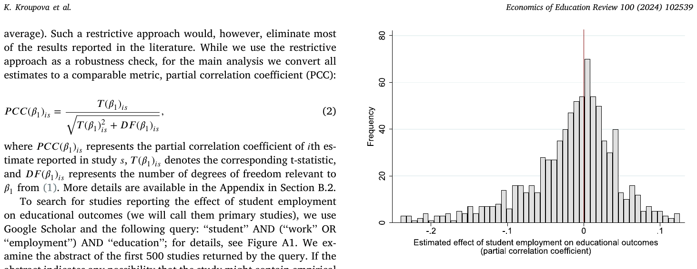
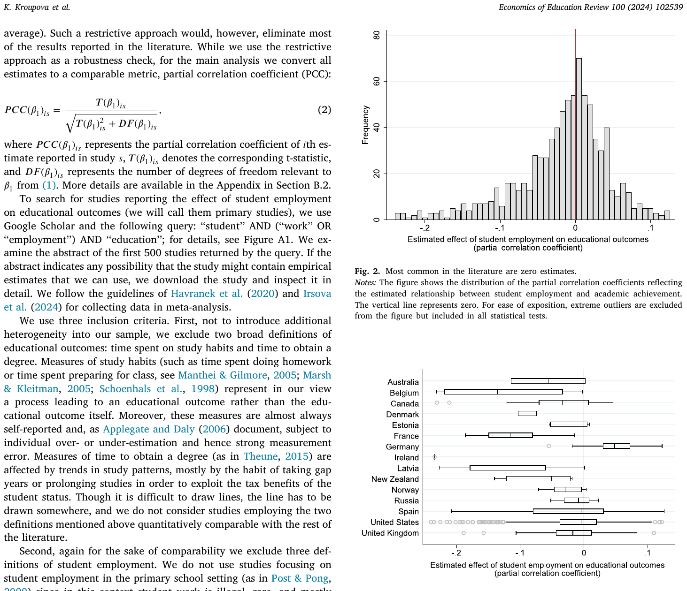
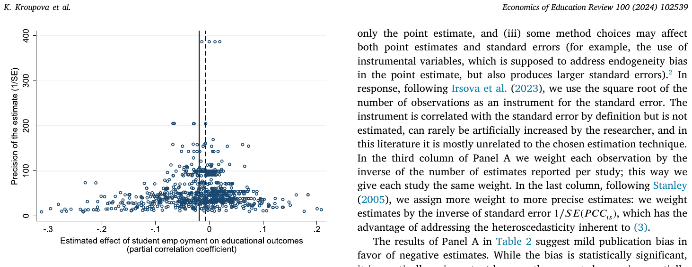
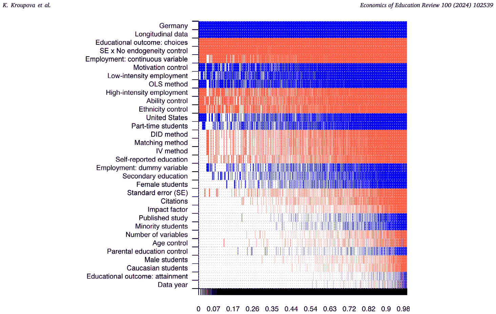

Katerina Kroupova, Tomas Havranek, Zuzana Irsova (2024), "Student Employment and Education: A Meta-Analysis." Economics of Education Review 100, 102539. https://doi.org/10.1016/j.econedurev.2024.102539.
Katerina Kroupovaa, Tomas Havranekb,c,d, Zuzana Irsovab,*
a Anglo-American University, Prague, Czech Republic
b Institute of Economic Studies, Faculty of Social Sciences, Charles University, Prague, Czechia
c Centre for Economic Policy Research, London, United Kingdom
d Meta-Research Innovation Center, Stanford, United States of America
We are grateful to the Editor, Daniel Kreisman, and two anonymous referees for their helpful suggestions. Havranek acknowledges support from the Czech Science Foundation (grant #24-11583S) and from NPO ''Systemic Risk Institute'' LX22NPO5101, funded by the European Union–Next Generation EU (Czech Ministry of Education, Youth and Sports, NPO: EXCELES); Irsova acknowledges support from the Czech Science Foundation (grant #23-05227M).
* Corresponding author. E-mail address: zuzana.irsova@fsv.cuni.cz (Z. Irsova).
Dataset link: meta-analysis.cz/students
JEL classification: C83, I21, J22
Abstract
Educational outcomes have many determinants, but one that most young people can readily control is choosing whether to work while in school. Sixty-nine studies have estimated the effect, but results vary from large negative to positive estimates. We show that the results are systematically driven by context, publication bias, and treatment of endogeneity. Studies neglecting endogeneity suffer from an upward bias, which is almost fully compensated by publication selection in favor of negative estimates. Overall the literature suggests a negative but economically inconsequential mean effect. The effect is more substantive for decisions to drop out. To derive these results we collect 861 previously reported estimates together with 32 variables reflecting estimation context, use recently developed techniques to correct for publication bias, and employ Bayesian model averaging to assign a pattern to the heterogeneity in the literature.
Keywords: Student employment, Educational outcomes, Meta-analysis, Publication bias, Bayesian model averaging
1. Introduction
The fact that many young people work while in school (45% of American students in college and 19% in high school as of 2019, BLS 2020) prompts us to consider two important aspects of education. First, some students are financially constrained and therefore forced to work while in school, possibly to the detriment of their grades. Second, students may believe that working provides important skills and experience that classroom learning cannot, and are willing to make a tradeoff between the two. The resulting correlation between educational outcomes, broadly defined, and working while in school can go in either direction. What is the causal relationship? We try to provide an answer for different contexts by collecting existing empirical estimates and conducting a large meta-analysis.
Fig. 1 shows the main motivation for our paper. Sixty-nine studies have attempted to estimate the effect in question, and collectively they have produced 861 estimates. We recompute these estimates into a comparable metric (partial correlation coefficient) and observe that the results differ greatly across but also within studies: some studies report exclusively negative estimates, a few studies report exclusively positive ones, but most studies report both. In this paper we provide the first quantitative synthesis of this literature, which allows us to isolate the impact of endogeneity and publication biases and to assign a pattern to the heterogeneity apparent in Fig. 1.
Figure 1. Results vary both across and within studies. Notes: The figure shows a box plot of partial correlation coefficients (computed from reported coefficients for comparability) reflecting the estimated relationship between student employment and educational outcomes. The estimates are further divided according to their treatment of endogeneity (panel a) and education level (panel b). We say that an estimate accounts for endogeneity if it is obtained using (i) instrumental variables, (ii) difference-in-differences, (iii) ordinary least squares with explicit control for student ability, (iv) matching with explicit control for student ability, or (v) student fixed effects. The studies are sorted from the most negative to the most positive mean estimate. The length of each box represents the interquartile range (P25-P75), and the line inside the box represents the median. The whiskers represent the smallest and largest estimates within 1.5 times the range between the upper and lower quartiles. Circles denote outliers; the vertical line denotes zero. For ease of exposition, extreme outliers are excluded from the figure but included in all statistical tests. For the same reason the estimates from the 4 studies with the largest negative results are not fully shown in the figure but their range is indicated numerically. Figure B1 in the Appendix shows the box plot sorted by data year and also displays the number of estimates taken from each study.
The current state of knowledge regarding the effect of student employment on educational outcomes is best summarized in the excellent narrative survey by Neyt et al. (2019). They discuss in detail the underlying theories, estimation methods, and the results of individual studies. Their main conclusions include the following: (i) high intensity work has negative effects on educational outcomes, especially the dropout rate, (ii) the effect is stronger for tertiary than secondary education, and (iii) better studies tend to find slightly less negative estimates. Our chief contribution is that, via standardization of the reported effects and formalization of the survey, we are able to account for potential publication bias. While an imperfect solution, standardization enables us to say something about the typical magnitude of the effects. We also explicitly account for model uncertainty in the literature and inspect how individual data and method choices, while holding others unchanged, typically affect the results.
We find that, in most contexts, working while in school does not affect educational outcomes much. But the effect can be substantial for high-intensity employment and decisions whether to continue with schooling. Germany is the only country for which the research literature shows that student employment improves educational outcomes on average (although the confidence interval is wide). Though for comparability with the rest of the sample we do not consider estimates that address apprenticeships in German Berufsschulen (vocational schools), the long German tradition of effectively combining work and education translates into a corresponding synergy even at the college level (for details on the German system, see, for example, Roezer & van de Werfhorst, 2020). On balance, the 861 estimates reported in the 69 existing studies are consistent with the conclusion that low-intensity student employment does not hurt education much—and, of course, typically has positive influence on other aspects of young people's lives. For example, Le Barbanchon et al. (2023) document how working while in school smooths students' transition into the labor market.
We find an unusual interaction between endogeneity and publication biases, and the fundamental results described above are corrected for both biases as well as other misspecifications. Endogeneity is key here because mostly unobserved characteristics, especially ability, influence both educational outcomes and the decision to work while in school: able students can combine work and study with good results, displaying both more hours worked and better educational outcomes. If a researcher ignores ability, she wrongly concludes that student employment improves education. But it is also plausible that in some cases the endogeneity bias is negative: for example, students from disadvantaged families can be forced to work in order to sustain their studies, while also showing a propensity for weaker educational outcomes whether or not they work. Researchers have tackled the problem by employing quasi-experimental techniques (instrumental variables, difference-in-differences) or by using a proxy for ability (such as IQ) together with variables reflecting family background (parental education, family affluence). About a half of the estimates are computed while neglecting endogeneity, which makes them obviously suspicious. Instead of omitting these estimates, we use them to identify the mean endogeneity bias in the literature. The bias is positive, suggesting positive selection to employment.
The second source of bias in the literature is publication selection (Stanley, 2001),1 which can, in the absence of pre-registered replications, only be addressed by meta-analysis. Researchers write their papers with the intention to publish, and some may consider negative estimates more intuitive and thus publishable compared to positive estimates, especially when the estimates are statistically significant. Publication selection bias does not imply cheating. An unintuitive result may indicate an issue with the data or the model, and the researcher can often improve the results by running a different specification. The problem is that unintuitive (positive or insignificant) results are easy to spot, while large negative estimates, which might also be due to issues with data or methods, are hard to identify. The asymmetry in the selection rule causes a bias away from zero in most fields of economics (Ioannidis et al., 2017); the bias is natural, inevitable, and it is thus the task of those who take stock of the literature to identify and correct for the bias. We find that the estimates tackling endogeneity, being almost always slightly negative, are typically free from the bias—a rare finding in economics. In contrast, estimates that ignore endogeneity are plagued by publication bias, because in the absence of publication selection they gravitate towards positive and thus less intuitive results.
In the second part of the paper we investigate the sources of heterogeneity in the literature beyond publication and endogeneity biases. We collect 32 aspects that reflect the context in which the estimate was obtained: characteristics of the data (e.g., definition of variables), structural variation (e.g., gender, race, country), estimation method (e.g., matching, instrumental variables), and publication characteristics (e.g., study citations). Regressing these 32 variables on the collected estimates of the effect of student employment on educational outcomes has two problems. First, model uncertainty: we do not know ex ante which of the variables truly matter. Including all variables in an OLS regression would greatly increase the standard error even for the most important variables. As a solution we choose Bayesian model averaging (for details, see, for example Eicher et al., 2011), which is the natural response to model uncertainty in the Bayesian setting (Steel, 2020). Bayesian model averaging runs many regressions with different combinations of the 32 explanatory variables and weights them according to model fit and parsimony. Second, collinearity: interpretation of individual marginal effects is difficult. We use the dilution prior by George (2010), which partly addresses the issue.
The model averaging analysis confirms the importance of endogeneity and publication biases even after controlling for additional aspects of study design. Studies that neglect endogeneity tend to report more positive estimates, while studies that employ instrumental variables, difference-in-differences, or studies that include a proxy for ability, tend to report more negative estimates. Publication bias affects studies that neglect endogeneity, while studies that control for endogeneity appear to be mostly free of the bias. Other study characteristics that systematically affect the reported effects of student employment on education are the measurement of educational outcomes (average grades vs. decisions to drop out), structure of the data (panel vs. cross-section), employment intensity (high vs. low), country (Germany vs. others), and the use of other control variables in observational studies (motivation, ethnicity). As the bottom line of our analysis, we create a hypothetical study that is a weighted average over all the estimates in our dataset but uses Bayesian model averaging to give more weight to studies that are more credible—so that, for example, little weight is placed on imprecise studies ignoring endogeneity, more weight is placed on highly-cited studies published in top journals, etc. We construct the hypothetical study for several scenarios reflecting different context.
2. Data
In this section we describe how we collect data for the meta-analysis. The description requires a brief discussion of how researchers typically measure the effect of student employment on education. More details on measurement follow in Section 4, and an in-depth discussion, which we do not replicate in this paper, is available in Neyt et al. (2019). Put simply, the estimates that we collect stem from models that can be reduced into the following regression:
where denotes education of student in time , denotes the student's employment, is the error term, and vector of denotes the set of variables controlling for preexisting heterogeneity. The vector contains characteristics of individuals (such as age, race, religious affiliation, past performance, and motivation), family background (such as parents' marital status, educational attainment, number of siblings, and family income), or the specifics of the schooling institution (class size, public vs. private school, regional unemployment). The coefficient of main interest is , which is what we collect from the studies—together with the standard error and 31 other variables that reflect the context in which the coefficient was produced.
Educational outcomes can be measured in a variety of ways. Some researchers define educational outcomes in terms of study habits, which refer to measures such as class attendance or time spent studying (Marsh & Kleitman, 2005; Schoenhals et al., 1998). Some define them as choices made during the course of studies, for example whether to continue with further education (Steel, 1991). A natural measure of educational outcomes is a test result, and this definition is also the one most commonly used in the literature (DeSimone, 2008; Dustmann & van Soest, 2007). Other researchers focus on educational attainment, which comprises students' probable and actual achievements (Beffy et al., 2013; Dadgar, 2012).
Measuring student employment is only slightly easier. Most studies estimate in terms of the effect of employment intensity on education, while the rest estimate in terms of the effect of employment status on education. Researchers using employment status as the response variable simply distinguish between working and non-working students, defining student employment as a dummy variable (see, for example McKenzie & Schweitzer, 2001; McNeal, 1997). In contrast, researchers using employment intensity define the variable either as a continuous (average hours worked per week, such as in Kalenkoski & Pabilonia, 2010) or a categorical variable (defining several categories of work intensity, such as in Torres et al., 2010; Tyler, 2003). The coefficient thus has different interpretation depending on study design. Even early researchers in this field admit that ''the range of findings may be an artifact of the different operationalizations'' (McNeal, 1997, p. 208).
Narrative surveys of this literature date back to Newman (1942), and all struggle with the differences in the definitions of both variables and, fundamentally, with results as shown in Figure B1 in the Introduction. As Riggert et al. (2006, p. 85) put it: ''A critical reading of the empirical literature on student employment could legitimately lead different readers to different conclusions''. One solution is to review the literature narrowly, focusing only on one definition of the effect (for example, how much an additional hour of work per week changes the grade point average). Such a restrictive approach would, however, eliminate most of the results reported in the literature. While we use the restrictive approach as a robustness check, for the main analysis we convert all estimates to a comparable metric, partial correlation coefficient (PCC):
where represents the partial correlation coefficient of th estimate reported in study , denotes the corresponding t-statistic, and represents the number of degrees of freedom relevant to from (1). More details are available in the Appendix in Section B.2.
To search for studies reporting the effect of student employment on educational outcomes (we will call them primary studies), we use Google Scholar and the following query: ''student'' AND (''work'' OR ''employment'') AND ''education''; for details, see Figure A1. We examine the abstract of the first 500 studies returned by the query. If the abstract indicates any possibility that the study might contain empirical estimates that we can use, we download the study and inspect it in detail. We follow the guidelines of Havranek et al. (2020) and Irsova et al. (2024) for collecting data in meta-analysis.
We use three inclusion criteria. First, not to introduce additional heterogeneity into our sample, we exclude two broad definitions of educational outcomes: time spent on study habits and time to obtain a degree. Measures of study habits (such as time spent doing homework or time spent preparing for class, see Manthei & Gilmore, 2005; Marsh & Kleitman, 2005; Schoenhals et al., 1998) represent in our view a process leading to an educational outcome rather than the educational outcome itself. Moreover, these measures are almost always self-reported and, as Applegate and Daly (2006) document, subject to individual over- or under-estimation and hence strong measurement error. Measures of time to obtain a degree (as in Theune, 2015) are affected by trends in study patterns, mostly by the habit of taking gap years or prolonging studies in order to exploit the tax benefits of the student status. Though it is difficult to draw lines, the line has to be drawn somewhere, and we do not consider studies employing the two definitions mentioned above quantitatively comparable with the rest of the literature.
Second, again for the sake of comparability we exclude three definitions of student employment. We do not use studies focusing on student employment in the primary school setting (as in Post & Pong, 2000) since in this context student work is illegal, rare, and mostly limited to a few specific developing countries. Similarly, we discard studies examining the impact of ''sandwich work'' placement (a year-long integrated period of work experience in students' study program) because such programs are specifically designed to be part of the curriculum with the aim to enhance student academic performance (Jones et al., 2017; Scott-Clayton & Minaya, 2016). Finally, we exclude studies investigating the relationship between summer employment and educational outcomes (Leos-Urbel, 2014, for example) and strictly adhere to research papers focusing on work during school terms.
Third, to be included in the meta-analysis the study must report the standard error or another measure from which the standard error can be reconstructed. We thus exclude several studies that do not report any measure of uncertainty or report only the number of asterisks to represent significance (as in Marsh & Kleitman, 2005; McCoy & Smyth, 2007; Wang et al., 2010, among others). Following Stanley (2001), no study is disqualified on the basis of publication form. Therefore, aside from peer-reviewed journal articles we use working papers, book chapters, and dissertations and control for study quality later in the analysis. The final sample includes 861 estimates collected from 69 studies listed in Table 1.
The mean partial correlation coefficient is −0.017, while the median is −0.006. To put these numbers into perspective, consider Doucouliagos (2011), who collects 22,000 partial correlation coefficients produced in economics and creates guidelines for what can be considered zero, small, moderate, and large effects. The boundary between zero and small effects is 0.07, so the bulk of the literature is consistent with the notion that working while in school has no material effect on educational outcomes. Estimates very close to zero are generally most common in the literature, which is apparent from the histogram in Fig. 2. In the absence of publication bias, small-sample bias, and heterogeneity, we would expect the observed distribution of the estimates to be symmetrical. The histogram shows only a slight asymmetry, and 45% of the estimates have the less intuitive positive sign, which is unusual in economics.

Next, Fig. 3 documents the cross-country variation in our dataset. Two patterns stand out. First, only for one country the average estimate is positive: Germany. While for comparability we exclude estimates derived for German vocational schools (where combination of work and study is the central educational principle), these results suggest the German system is efficient in combining work and study even for other types of schools. Second, the only countries for which the mean partial correlation coefficient is smaller than −0.1 are France and Belgium.

| Apel et al. (2008) | Gleason (1993) | Rochford et al. (2009) |
|---|---|---|
| Applegate and Daly (2006) | Hawkins et al. (2005) | Rothstein (2007) |
| Arano and Parker (2008) | Holford (2020) | Sabia (2009) |
| Auers et al. (2007) | Hovdhaugen (2015) | Salamonson and Andrew (2006) |
| Baert et al. (2017) | Hwang (2013) | Savoca (2016) |
| Baert et al. (2018) | Jaquess (1984) | Simon et al. (2017) |
| Beerkens et al. (2011) | Joensen (2009) | Singh et al. (2007) |
| Beffy et al. (2013) | Jones and Sloane (2005) | Sprietsma (2015) |
| Body et al. (2014) | Kalenkoski and Pabilonia (2010) | Staff and Mortimer (2007) |
| Bozick (2007) | Kohen et al. (1978) | Staff et al. (2010) |
| Buscha et al. (2012) | Kouliavtsev (2013) | Steel (1991) |
| Callender (2008) | Lee and Orazem (2010) | Steinberg et al. (1982) |
| Canabal (1998) | Lee and Staff (2007) | Stinebrickner and Stinebrickner (2003) |
| Carr et al. (1996) | Maloney and Parau (2004) | Tienda and Ahituv (1996) |
| Choi (2018) | McKechnie et al. (2005) | Torres et al. (2010) |
| Dadgar (2012) | McKenzie and Schweitzer (2001) | Trockel et al. (2000) |
| D'Amico (1984) | McNeal (1997) | Tyler (2003) |
| Darolia (2014) | McVicar and McKee (2002) | Warren and Cataldi (2006) |
| DeSimone (2006) | Montmarquette et al. (2007) | Warren and Lee (2003) |
| DeSimone (2008) | Oettinger (1999) | Warren et al. (2000) |
| Dustmann and van Soest (2007) | Parent (2006) | Wenz and Yu (2010) |
| Eckstein and Wolpin (1999) | Paul (1982) | Yanbarisova (2015) |
| Ehrenberg and Sherman (1987) | Richardson et al. (2013) | Zhang and Johnston (2010) |
Notes: The dataset, together with R and Stata codes, is available at meta-analysis.cz/students.
While the simple mean is only indicative, it is true that the educational system in both countries shares many common features and differs from the German model in terms of the traditional interaction of study and work (see, for example, Roezer & van de Werfhorst, 2020, for details). While most of our estimates cover the US, excluding the US evidence would not change our main conclusions (Table B3 in the Appendix).
Fig. 4 shows six aspects of heterogeneity that are frequently discussed in the primary studies: the dimension of data, measure of educational outcome, employment intensity, educational level, control for endogeneity, and differences between the United States and other countries. In panel (a), we see that the distribution of estimates stemming from cross-sectional models is close to uniform, while the distribution of time series or panel estimates is closer to normal and much less likely to deliver estimates below −0.1. Panel (b) shows that estimates tend to be more negative if outcomes are measured as choices or attainment as opposed to test scores. From panel (c) it is apparent that high-intensity employment, compared to low-intensity employment, is more detrimental to educational outcomes. Panel (d) suggests that while estimates for secondary education are concentrated close to 0, estimates for tertiary education are much more dispersed. From panel (e) we see that most positive estimates are derived from techniques that neglect endogeneity. Panel (f) shows little evidence that estimates for the United States differ from those for other countries, with the exception of Germany; the figure also shows that the number of estimates for Germany is limited.
Figure 4. Selected patterns in the data. Notes: The figure depicts, for different subsets of data, histograms of partial correlation coefficients reflecting the estimated relationship between student employment and academic achievement.
3. Endogeneity and publication biases
Two main factors drive a wedge between the distribution of the underlying effects of student employment on education and the distribution of the reported estimates. First, endogeneity bias: in the absence of arguably exogenous variation in hours worked, a simple OLS regression does not suffice to reliably identify the causal effect. Because different studies, and indeed different estimates within the studies, use different approaches to handle endogeneity, some estimates will be more reliable than others. The direction of the resulting bias in the mean reported estimate is unclear. Second, publication bias: estimates with an intuitive sign, especially if statistically significant at standard thresholds, are more likely to be selected for publication. Such a selection typically biases the mean reported effect away from zero. In this section we discuss and examine both factors, starting with endogeneity.
3.1. Endogeneity
Randomized controlled experiments are unfortunately infeasible in this literature. An experiment on the employment–education nexus can be designed in principle, but it would be very costly and difficult to ensure proper randomization. We are not aware of any true experiment on this question. In the absence of randomized controlled experiments, researchers have used several strategies to combat the endogeneity problem. In this section we mostly rely on a simple binary classification whether endogeneity is reasonably accounted for in the primary study. In the next section, where we address heterogeneity, we will investigate in more detail the differences between the individual strategies.
The most intuitive source of endogeneity is positive selection: students of higher ability can achieve good study outcomes while, at the same time, managing to work. (See also the main theories on the employment–education nexus described in the Appendix, Section B.1.) On the other hand, one can also imagine the opposite scenario of a negative selection, in which work is more attractive to students for whom studies are not so important and who would display poor results anyway. A related source of endogeneity is reverse causality: students with good grades can perhaps afford to work more while not compromising their academic record. On the other hand, students with poor grades may feel discouraged at school, which could make them more likely to seek employment. The final source of endogeneity is measurement error: data on student employment typically come from surveys. If the measurement error is classical, the reported estimates will be biased towards zero. The first two sources of endogeneity, in contrast, can plausibly (but not inevitably) lead to a bias towards more positive estimates.
The attenuation bias stemming from the measurement error has rarely been mentioned in the literature on the employment–education nexus, and we are not aware of any study that would attempt to tackle it explicitly. Implicitly, the problem can be solved using instrumental variables if the instruments are measured with an error unrelated to that of the original employment variable. The IV approach, if properly executed, also tackles the remaining two sources of endogeneity. Another quasi-experimental technique used in the literature is the difference-in-differences approach, which requires reasonably long panel data. Some researchers have access to data directly relevant to the key variable, student ability, and can therefore use OLS or matching techniques with some confidence. Other studies do not have explicit data on ability but have at least two observations for each student, which enables them to include student fixed effects, thus eliminating the need for collecting invariable student-specific characteristics.
When classifying whether a study reasonably controls for endogeneity, we do not use the standard distinction between quasi-experimental methods and selection on observables. The reason is that, as hinted at in the previous paragraph, some observational studies are capable of adequately addressing at least two of the three sources of endogeneity. To be able to draw a line somewhere, we say that an estimate accounts for endogeneity if the estimate is obtained using (i) instrumental variables, (ii) difference-in-differences, (iii) ordinary least squares with explicit control for student ability, (iv) matching with explicit control for student ability, or (v) student fixed effects. About half of the estimates conform to this definition of endogeneity control. In the next paragraphs we discuss the context of the individual strategies.
Regarding the omitted variable bias, students' labor supply decisions are determined by both observable (e.g., family background, gender, ethnicity, etc.) and mostly unobservable characteristics (e.g., ability, motivation, work ethic, time preference, social and peer networks, etc.) that simultaneously influence students' academic performance (Beffy et al., 2013). These characteristics may systematically differ between students who participate in the labor market and students who do not (Rothstein, 2007). When estimating model (1) with ordinary least squares (OLS) without relevant controls, the estimate of is inconsistent. The OLS estimate of can be, nevertheless, biased both positively (upward) or negatively (downward). For example, if ability plays the dominant role, OLS estimates will be biased upwards because more able students will work more and also show better results at school. But if family background is important, students from disadvantaged families may be forced to work in order to sustain their studies, while simultaneously show worse study results compared to students from richer families.
Regarding reverse causality, both student employment and educational outcomes can be jointly determined (DeSimone, 2006). This occurs when the estimated effect of student work on academic performance partly reflects a causal impact of academic performance on student work. The bias usually permeates cross-sectional studies where researchers do not distinguish between time periods at which the student employment and academic achievement are measured. A number of estimates in our sample is produced without accounting for these sources of endogeneity. They include the results from early studies (utilizing OLS without controls and other elementary estimation methods) that treat student employment as exogenous (Ruhm, 1997) but they also include robustness checks where researchers intentionally show what happens when endogeneity is not accounted for. In any case, if a certain estimation method fails to appropriately control for the pre-existing heterogeneity between students, we cannot conclude that the estimated effect of student employment on educational outcomes is directly attributable to students' employment.
We codify, and examine in detail in the next section, five dummy variables that reflect estimation methods relevant to endogeneity treatment: OLS method which encompasses not only simple ordinary least squares but also other elementary techniques such as linear probability models, Matching method representing the propensity score matching approach, DID method that stands for the difference-in-differences approach, IV method that includes not only instrumental variable approaches but also the simultaneous modeling approach. Considering the varying underlying assumptions of these techniques and the degree to which these estimation methods account for students' unobservable differences, we expect estimation approaches to affect the reported estimates.
Some studies address endogeneity using the propensity score matching (3% of the dataset) that accounts for observable heterogeneity between working and non-working students (Choi, 2018). The propensity score matching technique pairs working and non-working students based on their similarity in various observable socio-psychological and demographic characteristics composing together the propensity score (Lee & Staff, 2007). Consequently, the effect of student employment on educational outcomes is compared between the matched students. Difference-in-differences (DID method) try to mimic experimental research design while using observational data (Buscha et al., 2012). Combined with the matching model, it can address selection on both observables and unobservables associated with work decisions without the need for instrumental variable and thus serve as a useful tool to obtain the causal effect.
Another approach to obtaining a consistent estimate is the instrumental variable procedure. Many researchers rely on the availability of local labor market conditions, e.g. youth unemployment rate, as the instrumental variable (see Beffy et al., 2013; Holford, 2020; Lee & Orazem, 2010; Rothstein, 2007). Other studies use child labor laws (Apel et al., 2008; Tyler, 2003), the proportion of unearned income (DeSimone, 2006), paternal schooling (DeSimone, 2008), socioeconomic status of the family (Simon et al., 2017), amount of financial aid students obtain (Sprietsma, 2015), or the variation in area house prices (Darolia, 2014) as their instrumental variables. Another method addressing the endogeneity bias is the dynamic discrete approach explicitly modeling students' decision-making process to work (Eckstein & Wolpin, 1999; Montmarquette et al., 2007). Given the small number of observations using this method (6), we incorporate the technique in the IV method dummy. The dynamic discrete approach estimates the likelihood function of participating in the labor market exploiting the finite number of discrete types of students who differ in unobservable characteristics (Eckstein & Wolpin, 1999).
The remaining set of techniques include panel methods. One solution allowing researchers to control for unobserved differences between working and non-working students entails the addition of individual unobserved fixed-effects into (1). By subtracting the individual-specific means from the variable values at each time period, the fixed-effects model allows researchers to control for the time-invariant student-level unobserved characteristics (Darolia, 2014). However, as noted by Apel et al. (2008), the fixed-effects model yields unbiased and consistent estimates only under the assumption that unobserved student characteristics determining student work habits and academic performance are constant over time. As explained by Oettinger (1999), this assumption is questionable as students' motivation is likely to fluctuate over time. Typically, students pursuing enrollment at tertiary education institutions increase their academic effort before their high school leaving exams in order to enhance their chances of being accepted to their top-choice universities.
An important aspect of estimation is the potential control for individual characteristics in OLS models. One such characteristic is students' intrinsic motivation. Richardson et al. (2013) demonstrate that employment is less likely to hamper academic performance if students work because they want to than because they have to. Another important factor researchers control for (if possible) is students' cognitive ability (Arano & Parker, 2008; McNeal, 1997; Staff & Mortimer, 2007). We consider this variable to be the strongest form of endogeneity control among the covariates commonly employed by researchers. For example, Oettinger (1999) finds that more able students systematically select different employment schedules than less able students.
Students' educational outcomes could also be influenced by the economic situation of their parents, and we include a dummy reflecting control for parental education. Carneiro and Heckman (2003) suggest that student educational choices are better explained by family permanent features, such as parents' education levels which directly contribute to family permanent income. Apart from that, students growing up in families with higher education levels are likely to perform better academically as education is more valued in such families (Arano & Parker, 2008). In addition to parental education, we include dummy variables for studies controlling for standard demographic characteristics such as students' ethnicity and age. Empirically, these factors have been shown to have a substantial impact on the link between student work and academic performance. For instance, Oettinger (1999) finds a negative effect of student employment on their GPA only for students from ethnic minorities. Kohen et al. (1978) argue that the negative association is less pronounced for older students who tend to be more mature and committed to their educational and occupational goals.
3.2. Publication bias
The second main problem in interpreting the literature is publication bias, the tendency to report estimates that are easier to publish. Ioannidis et al. (2017) suggest that the mean estimate reported in economics is exaggerated twofold because of the bias. In this section we examine the interaction between the publication and endogeneity biases. We begin our investigation of publication bias by employing a visual tool called a funnel plot (Egger et al., 1997). The funnel plot represents a scatter plot in which the estimate's magnitude is depicted on the horizontal axis against a measure of precision (the inverted standard error) on the vertical axis. The most precise estimates should lie close to the true mean effect in the top portion of the graph, with variance increasing at the bottom as precision decreases. Therefore, in the absence of publication bias, the graph should form a symmetrical inverted funnel (Stanley, 2005). In contrast, an asymmetry of the funnel plot indicates the presence of publication bias via preference for positive or negative estimates. (Though the asymmetry can also be caused by small-sample bias or heterogeneity.) The funnel plot presented in Fig. 5 roughly forms the predicted inverted funnel shape with a high level of symmetry. Even very imprecise estimates concentrated at the bottom of the figure are reported. Perhaps the left-hand part of the figure is slightly heavier, but overall few funnel plots in economics display so little asymmetry (Ioannidis et al., 2017). The visual test does not indicate publication bias.

Funnel asymmetry can be tested formally by regressing the values on the horizontal axis (PCCs) on the inverted vertical axis values (standard errors) as in Astakhov et al. (2019), Card and Krueger (1995), Havranek and Irsova (2010), Irsova and Havranek (2010), Stanley (2008), Yang et al. (2024):
where are the partial correlation coefficients, are the corresponding standards errors, and represents the error term. We interpret the constant as the true effect corrected for publication bias (that is, conditional on infinite precision) but, as we have noted, later introduce extensions that allow for nonlinearity and endogeneity of the standard error. Coefficient conveys information regarding the existence, direction, and magnitude of publication bias: if we obtain an estimate of statistically different from zero, we find evidence for funnel asymmetry, i.e. a non-zero correlation between estimates and their standard errors. To account for potential within-study correlation, we cluster standard errors at the study level. Moreover, we also report wild bootstrap confidence intervals (Roodman et al., 2019).
Table 2 reports the results for the full sample of 861 partial correlation coefficients. The first column of Panel A represents the benchmark test estimated by ordinary least squares. But the standard error on the right-hand side of the regression can be endogenous for at least three reasons: (i) it is itself an estimate, (ii) publication selection can work on the standard error (for example, by choosing an alternative clustering approach that yields smaller standard errors) instead of influencing only the point estimate, and (iii) some method choices may affect both point estimates and standard errors (for example, the use of instrumental variables, which is supposed to address endogeneity bias in the point estimate, but also produces larger standard errors).2 In response, following Irsova et al. (2023), we use the square root of the number of observations as an instrument for the standard error. The instrument is correlated with the standard error by definition but is not estimated, can rarely be artificially increased by the researcher, and in this literature it is mostly unrelated to the chosen estimation technique. In the third column of Panel A we weight each observation by the inverse of the number of estimates reported per study; this way we give each study the same weight. In the last column, following Stanley (2005), we assign more weight to more precise estimates: we weight estimates by the inverse of standard error , which has the advantage of addressing the heteroscedasticity inherent to (3).
The results of Panel A in Table 2 suggest mild publication bias in favor of negative estimates. While the bias is statistically significant, it is practically unimportant because the corrected mean is essentially zero, close to −0.017 prior to the correction. A similar finding emerges from Panel B, in which we exploit the panel data nature of our dataset. First, we use exclusively between-study variation and find evidence for bias that is a bit stronger than what we found in Panel A. In contrast, using within-study variation (running a model with study-level fixed effects) gives no evidence of publication bias. It should be noted that fixed effects are generally problematic in meta-analysis because some studies report only a few estimates while other studies report many of them, often as robustness checks. Identification thus rests on studies reporting many estimates, which makes little sense conceptually. Finally, we also employ study-level random effects, which combine within- and between-study variation. The random effects estimation suggests mild publication bias, similarly to the results reported in Panel A. The results for nonlinear estimators, reported in Panel C, are in line with the previous panels and described in the Appendix (Section B.3).
3.3. Interaction of the biases
In Table 3 we run tests of publication bias separately for estimates that neglect and try to account for endogeneity, respectively. We say that the study tries to account for endogeneity if it employs (i) instrumental variables, (ii) difference-in-differences, (iii) ordinary least squares with explicit control for student ability (such as IQ), (iv) matching with explicit control for student ability, or (v) student fixed effects. We identify 425 estimates from 50 studies that conform to this definition; in contrast, 436 estimates from 36 studies neglect endogeneity. The mean partial correlation coefficients, prior to correction for potential publication bias, are similar: −0.027 for estimates controlling for endogeneity, −0.008 for estimates ignoring endogeneity.
But Table 3 shows that correction for publication bias paints a different story. If endogeneity is taken into account, little publication bias follows, and the corrected mean partial correlation coefficient is, according to most techniques, close to the uncorrected mean. For estimates that ignore endogeneity, however, we find strong publication bias and a positive corrected mean according to most specifications. (For two techniques, WAAP and p-uniform*, no results are reported: the former does not identify any study that would have sufficient power, and the latter does not converge.) That is, the results of primary studies differ fundamentally depending on whether endogeneity is taken into account: if not, the results tend to be positive. Because positive estimates are less intuitive, some researchers try different specifications until they obtain a negative coefficient. Publication bias towards negative estimates follows, and the mean reported estimate is negative even if researchers ignore endogeneity.
| Panel A: Linear techniques | OLS | IV | Study | Precision | |
|---|---|---|---|---|---|
| Standard error | −0.881*** | −0.914*** | −1.094** | −0.544* | |
| (Publication bias) | (0.312) | (0.343) | (0.444) | (0.310) | |
| [−1.542, −0.245] | [−1.709, −0.233] | [−2.413, −0.126] | [−1.235, 0.161] | ||
| Constant | 0.00597 | 0.00692 | 0.0136 | −0.00299 | |
| (Effect beyond bias) | (0.0123) | (0.0126) | (0.0176) | (0.00673) | |
| [−0.0211, 0.0353] | [−0.0220, 0.0370] | [−0.0272, 0.0533] | [−0.0190, 0.0112] | ||
| Observations | 861 | 861 | 861 | 861 | |
| Panel B: Between- and within-study variation | BE | FE | RE | ||
| Standard error | −1.959*** | 0.189 | −0.405** | ||
| (Publication bias) | (0.358) | (0.573) | (0.200) | ||
| Constant | 0.0159 | −0.0225 | −0.0344*** | ||
| (Effect beyond bias) | (0.0145) | (0.0152) | (0.0102) | ||
| Observations | 861 | 861 | 861 | ||
| Panel C: Nonlinear techniques | WAAP | Stem method | Kinked model | Selection model | p-uniform* |
| Effect beyond bias | 0.00756 | 0.00996 | −0.0103*** | −0.0130*** | −0.0293* |
| (0.0130) | (0.0265) | (0.00270) | (0.005) | (0.0178) | |
| Observations | 861 | 861 | 861 | 861 | 861 |
Notes: The table reports, for linear techniques, the results of regression estimated for the whole sample of 861 estimates (for which the mean estimate equals −0.017). denotes the partial correlation coefficient of the th estimate from the th study and denotes its standard error. The standard errors of the regression parameters are clustered at the study level and shown in parentheses; 95% confidence intervals obtained using wild bootstrap are shown in brackets. Panel A: OLS = ordinary least squares, IV = the inverse of the square root of the number of observations used as an instrument for the standard error, Study = weighted by the inverse of the number of estimates reported per study, Precision = weighted by the inverse of the estimate's standard error. Panel B: BE = study-level between effects, FE = study-level fixed effects, RE = study-level random effects. Panel C: WAAP (weighted average of adequately powered, Ioannidis et al., 2017), stem method (Furukawa, 2021), kinked model (Bom & Rachinger, 2019), selection model (Andrews & Kasy, 2019), p-uniform* (van Aert & van Assen, 2021). *** Denote statistical significance at the 1%. ** Denote statistical significance at the 5%. * Denote statistical significance at the 10% level.
| [Block 1] Studies ignoring endogeneity | |||||
|---|---|---|---|---|---|
| Panel A: Linear techniques | OLS | IV | Study | Precision | |
| Standard error | −1.858*** | −1.945*** | −2.420*** | −0.959** | |
| (Publication bias) | (0.457) | (0.483) | (0.545) | (0.397) | |
| [−3.189, −0.866] | [−3.23, −0.921] | [−3.83, −1.17] | [−2.058, −0.24] | ||
| Constant | 0.0405** | 0.0425** | 0.0591*** | 0.0171 | |
| (Effect beyond bias) | (0.0172) | (0.0176) | (0.0189) | (0.0112) | |
| [0.0001, 0.084] | [0.002, 0.086] | [0.0003, 0.105] | [−0.001, 0.067] | ||
| Observations | 436 | 436 | 436 | 436 | |
| Panel B: Between- and within-study variation | BE | FE | RE | ||
| Standard error | −2.535*** | −0.903 | −1.310*** | ||
| (Publication bias) | (0.489) | (0.794) | (0.255) | ||
| Constant | 0.0331 | 0.0156 | −0.0111 | ||
| (Effect beyond bias) | (0.0217) | (0.0207) | (0.0146) | ||
| Observations | 436 | 436 | 436 | ||
| Panel C: Nonlinear techniques | WAAP | Stem method | Kinked model | Selection model | p-uniform* |
| Effect beyond bias | ⋅ | −0.00959** | 0.00187 | 0.000 | ⋅ |
| (⋅) | (0.00432) | (0.00386) | (0.00500) | (⋅) | |
| Observations | 436 | 436 | 436 | 436 | 436 |
| [Block 2] Studies trying to take endogeneity into account | |||||
| Panel A: Linear techniques | OLS | IV | Study | Precision | |
| Standard error | −0.311 | −0.311 | −0.244 | −0.449 | |
| (Publication bias) | (0.347) | (0.392) | (0.431) | (0.387) | |
| [−1.174, 0.710] | [−1.306, 0.829] | [−1.556, 0.987] | [−1.3, 0.489] | ||
| Constant | −0.0189** | −0.0185* | −0.0218 | −0.0151** | |
| (Effect beyond bias) | (0.00932) | (0.00984) | (0.0159) | (0.00751) | |
| [−0.040, −0.0001] | [−0.039, −0.0002] | [−0.057, 0.011] | [−0.034, 0.002] | ||
| Observations | 425 | 425 | 425 | 425 | |
| Panel B: Between- and within-study variation | BE | FE | RE | ||
| Standard error | −1.334*** | 1.041*** | 0.235 | ||
| (Publication bias) | (0.457) | (0.373) | (0.287) | ||
| Constant | 0.00317 | −0.0556*** | −0.0431*** | ||
| (Effect beyond bias) | (0.0169) | (0.0101) | (0.0126) | ||
| Observations | 425 | 425 | 425 | ||
| Panel C: Nonlinear techniques | WAAP | Stem method | Kinked model | Selection model | p-uniform* |
| Effect beyond bias | −0.0200*** | 0.00996 | −0.0138*** | −0.0260*** | −0.0319*** |
| (0.00687) | (0.0294) | (0.00369) | (0.008) | (0.0106) | |
| Observations | 425 | 425 | 425 | 425 | 425 |
Notes: The table reports, for the linear techniques, the results of regression estimated for the sample of 436 estimates where the endogeneity of students' decision to work is not controlled for [Block 1] and for the sample of 425 estimates where this endogeneity is controlled for [Block 2]. denotes the partial correlation coefficient of the th estimate from the th study, and denotes its standard error. The standard errors of the regression parameters are clustered at the study level and shown in parentheses; 95% confidence intervals from wild bootstrap clustering are shown in brackets. Panel A: OLS = ordinary least squares, IV = the inverse of the square root of the number of observations used as an instrument for the standard error, Study = weighted by the inverse of the number of estimates reported per study, Precision = weighted by the inverse of the estimate's standard error. Panel B: BE = study-level between effects, FE = study-level fixed effects, RE = study-level random effects. Panel C: WAAP (weighted average of adequately powered, Ioannidis et al., 2017), stem method (Furukawa, 2021), kinked model (Bom & Rachinger, 2019), selection model (Andrews & Kasy, 2019), p-uniform* (van Aert & van Assen, 2021). In Block 1, WAAP and p-uniform* do not converge. *** Denote statistical significance at the 1%. ** Denote statistical significance at the 5%. * Denote statistical significance at the 10% level.
The standardization of the reported results to partial correlation coefficients enables us to include all estimates in a meta-analysis but, at the same time, complicates inference. For this reason in the Appendix we run several robustness checks based on subsamples of data for which standardization is not necessary. We start with estimates that use hours worked per week and the 4.0 GPA scale (Table B4). A disclaimer is in order: a very small fraction of estimates can be analyzed in this way. After correction for publication and endogeneity biases, the median meta-analysis estimate is around −0.002, which implies a decrease in GPA of about 0.02 following an increase of 10 in working hours per week; a negligible effect. The effect is substantially larger for the dropout rate (Table B5), where the implied median coefficient is about −0.01: a 10 percentage-point increase in dropout probability following an increase of 10 in working hours per week. Among studies using a binary variable for employment (Table B6), the results suggest that working while studying typically increases dropout probability by about 15 percentage points.
4. Heterogeneity
In this section we examine why the estimates reported in the literature differ so much. In doing so, we also test the robustness of our results concerning publication bias, because heterogeneity may interact with the bias; indeed, heterogeneity can make the funnel plot asymmetrical even if the literature is free of selective reporting. In the previous section we used several advanced techniques that in important aspects go beyond the funnel asymmetry test, but their results were broadly consistent with the more straightforward linear approach. That is important, because the more complex tests of publication bias cannot be used in the Bayesian model averaging framework, which is the workhorse of the present section due to substantial model uncertainty, while the linear test can be easily incorporated into Bayesian model averaging.
The section is inspired by Tyler (2003, p. 386), who notes in his survey of the earlier literature on the nexus between student employment and education: “Taken as a whole these studies do not offer consistent lessons about the relationship between school-year work and academic achievement. The reasons for the inconsistencies are likely related to some combination of different data sets, different age students, different dependent variables, and different empirical methods across the studies”. We collect 32 variables that reflect such differences. We estimate their effect on the results reported in individual studies and, as the bottom line of our analysis, we present partial correlation coefficients implied for different contexts by best practice methodology. Our previous results regarding publication and endogeneity biases continue to hold.
For ease of exposition we group the variables into four blocks: data characteristics, structural variation, estimation methods, and publication characteristics. Table 4 introduces the definitions of the variables, their mean, standard deviation, and mean weighted by the inverse of the number of estimates reported per study. The correlations between individual variables are not excessive, as shown by Figure B2 in the Appendix; also, all variance-inflation factors are below 10. But, as will be discussed later, we still use the dilution prior for Bayesian model averaging that takes potential collinearity into account. The variables, together with the reasons for their inclusion, are described in more detail in Section B.4 in Appendix.
Our intention is to find out which variables help explain the heterogeneity in the estimates reported in the literature. One solution is to include all variables into one regression, but the problem is that we do not know ex ante which of the 32 explanatory variables belong to the underlying model. We believe all of them might be important in explaining the heterogeneity, but in practice likely only a few will prove to be, and including all into one regression would substantially decrease the precision of the entire estimation, complicating inference even for the most important variables. Thus we face substantial model uncertainty, the natural response to which emerges in the Bayesian setting: Bayesian model averaging (BMA, Steel, 2020). BMA has recently been used in meta-analysis, for example, by Ehrenbergerova et al. (2023), Elminejad et al. (2023), Havranek et al. (2024), Matousek et al. (2022).
BMA addresses model uncertainty by considering all possible models with different choices of covariates (Raftery, 1995). In essence, BMA estimates a large amount of regressions using different subsets of explanatory variables. Consequently, it constructs a weighted average of all the possible combinations of explanatory variables (Zeugner & Feldkircher, 2009) using posterior model probabilities as weights. Posterior model probabilities are proportional to the product of the integrated likelihood of the model capturing the probability of utilized data considering the model and the prior model probability. This product is then divided by the sum of integrated likelihoods of regression models. While the posterior model probability indicates the fit the model, the prior model probability refers to researchers' prior beliefs regarding the probability of a model before considering the data (Zeugner, 2011). Consequently, BMA uses the computed posterior model probabilities to calculate the weighted posterior mean and the weighted posterior variance (or weighted posterior standard deviation) for each included explanatory variable. These two statistics can be compared to the estimate of a regression coefficient and the standard error of the estimated regression parameter in the frequentist setting. The posterior inclusion probability (PIP) of a variable is defined as the sum of the posterior model probabilities (PMP) of models which include this variable. We interpret PIP as the probability that a given variable is a useful predictor of the dependent variable. Technical details on the estimation procedure are available in Section B.5 in Appendix.
| Variable | Description | Mean | SD | WM |
|---|---|---|---|---|
| PCC | The partial correlation coefficient corresponding to the estimated effect of student employment on educational outcomes. | −0.017 | 0.066 | −0.051 |
| Standard error (SE) | The standard error of the PCC. | 0.027 | 0.017 | 0.034 |
| SE * No endogeneity control | An interaction between the standard error and ignoring endogeneity (proxy for publication bias in studies that ignore endogeneity). | 0.013 | 0.016 | 0.015 |
| Data characteristics | ||||
| Employment: continuous variable | = 1 if student employment is measured by a continuous variable. | 0.303 | 0.460 | 0.492 |
| Employment: dummy variable | = 1 if student employment is measured by a dummy variable. | 0.184 | 0.387 | 0.158 |
| Employment: categorical variable | = 1 if student employment is measured by a categorical variable (reference category). | 0.513 | 0.500 | 0.350 |
| Educational outcome: choices | = 1 if educational outcome is specified as educational decision (e.g. continue next year, enroll at a college). | 0.171 | 0.376 | 0.168 |
| Educational outcome: attainment | = 1 if educational outcome is specified as educational attainment (e.g. probability of graduation). | 0.135 | 0.342 | 0.176 |
| Educational outcome: test scores | = 1 if educational outcome is specified as test and exam results (reference category). | 0.695 | 0.461 | 0.656 |
| Self-reported education | = 1 if educational outcome (dependent variable) is self-reported. | 0.260 | 0.439 | 0.449 |
| Longitudinal data | = 1 if longitudinal data are used to estimate the effect. | 0.847 | 0.360 | 0.580 |
| Cross-sectional data | = 1 if cross-sectional survey data are used to estimate the effect (reference category). | 0.153 | 0.360 | 0.420 |
| Data year | The logarithm of the mean year of the data used minus the earliest average year in our data (base = 1967). | 3.283 | 0.516 | 3.336 |
| Structural variation | ||||
| Male students | = 1 if the effect is estimated for male students only. | 0.253 | 0.435 | 0.106 |
| Female students | = 1 if the effect is estimated for female students only. | 0.258 | 0.438 | 0.083 |
| Mixed-gender students | = 1 if the effect is estimated for students of all genders (reference category). | 0.489 | 0.500 | 0.810 |
| Caucasian students | = 1 if the effect is estimated for white students only. | 0.038 | 0.192 | 0.045 |
| Minority students | = 1 if the effect is estimated for minority students only. | 0.053 | 0.225 | 0.027 |
| Part-time students | = 1 if the effect is estimated for part-time students only. | 0.038 | 0.192 | 0.009 |
| Secondary education | = 1 if the effect is estimated for students involved in secondary education. | 0.721 | 0.449 | 0.464 |
| Tertiary education | = 1 if the effect is estimated for students involved in tertiary education. | 0.279 | 0.449 | 0.536 |
| Low-intensity employment | = 1 if the effect is estimated for low-intensity workers (fewer than 15 h per week). | 0.215 | 0.411 | 0.129 |
| Medium-intensity employment | = 1 if the effect is estimated for medium-intensity workers (15–30 h per week). | 0.109 | 0.312 | 0.072 |
| High-intensity employment | = 1 if the effect is estimated for high-intensity workers (more than 30 h per week). Reference category in BMA: medium-intensity employment or unknown intensity. | 0.189 | 0.392 | 0.142 |
| On-campus employment | = 1 if the effect is estimated for jobs situated on the school premises. | 0.020 | 0.139 | 0.043 |
| United States | = 1 if the country of analysis is the US. | 0.806 | 0.396 | 0.638 |
| Germany | = 1 if the country of analysis is Germany. | 0.034 | 0.181 | 0.014 |
| Other countries | = 1 if the country of analysis is not the US or Germany. | 0.049 | 0.216 | 0.116 |
| Estimation methods | ||||
| OLS method | = 1 if elementary approaches (OLS, logit regression, etc.) are used for estimation. | 0.610 | 0.488 | 0.674 |
| Matching method | = 1 if the propensity score matching approach is used for estimation. | 0.034 | 0.181 | 0.029 |
| DID method | = 1 if the difference-in-differences approach or student fixed effects are used for estimation. | 0.051 | 0.220 | 0.011 |
| IV method | = 1 if the instrumental variable approach or simultaneous equation modeling is used for estimation. | 0.160 | 0.367 | 0.179 |
| Other methods | = 1 if other methods are used for estimation (reference category). | 0.145 | 0.352 | 0.107 |
| Endogeneity control | = 1 if the estimation accounts for potential endogeneity (IV approach, difference-in-differences, ability control via OLS, matching, or fixed effects). The variable is not included in BMA because of collinearity but its inversion 'No endogeneity control' interacted with the standard error is included. | 0.494 | 0.500 | 0.618 |
| Number of variables | The logarithm of the number of explanatory variables used in the model in the primary study. | 2.568 | 0.856 | 2.461 |
| Ability control | = 1 if estimation explicitly accounts for students' ability, e.g. SAT scores, IQ, prior education, class rank, etc. | 0.366 | 0.482 | 0.555 |
| Motivation control | = 1 if estimation explicitly controls for students' academic motivation. | 0.338 | 0.473 | 0.237 |
| Parental education control | = 1 if estimation explicitly includes variable(s) reflecting parents' educational level. | 0.545 | 0.498 | 0.445 |
| Age control | = 1 if estimation explicitly controls for students' age. | 0.462 | 0.499 | 0.419 |
| Ethnicity control | = 1 if estimation explicitly includes control variables reflecting students' ethnicity. | 0.596 | 0.491 | 0.453 |
| Publication characteristics | ||||
| Impact factor | The Journal Citation Reports impact factor of the journal in which the primary study was published (collected in August 2021). | 1.583 | 1.237 | 1.573 |
| Citations | The logarithm of the mean number of Google Scholar citations received per year since the study was published (collected in August 2021). | 1.695 | 1.006 | 1.552 |
| Published study | = 1 if the study was published in a peer-reviewed journal. | 0.912 | 0.284 | 0.826 |
Notes: Collected from primary studies. SD = standard deviation, WM = mean weighted by the inverse of the number of estimates reported per study.
The results of our BMA exercise are visualized in Fig. 6. The vertical axis lists the explanatory variables in descending order from top to bottom according to their posterior inclusion probability. Hence the most important predictors lie on the top of the plot. The horizontal axis depicts the individual models; the width of each column corresponds to the posterior model probability, so the best models are on the left. White color signifies the exclusion of the particular variable from the model, red color (lighter in grayscale) indicates a negative coefficient for the particular variable, and blue color (darker in grayscale) indicates a positive coefficient. We identify ten variables with PIP above 0.5: publication bias interacted with endogeneity bias, employment: continuous variable, educational outcome: choices, longitudinal data, high-intensity and low-intensity employment, Germany, and control variables of ability, motivation, and ethnicity. When interpreting the magnitude of PIP, researchers usually follow (Jeffreys, 1961). Jeffreys (1961) distinguishes between weak, moderate, strong, and decisive effect if the value of the corresponding PIP falls into the interval of 0.5–0.75, 0.75.-0.95, 0.95–0.99, and 0.99–1, respectively, and we follow the convention.

We accompany the graphical output of BMA with quantitative results reported in the left-hand part of Table 5. (In addition, Figure B6 in the Appendix shows posterior coefficient distributions for selected variables.) The numerical results corroborate the conclusions drawn earlier from the plot. The interpretation of posterior means from Table 5 corresponds to the marginal effects of the characteristic on the calculated PCC. For example, the decision to define the educational outcome as a choice means, ceteris paribus, that the calculated PCC is on average smaller by −0.029 compared to the educational outcome defined as a test score (the category omitted from the regression). Without further assumptions and computation, Table 5 does not allow us to draw conclusions on the implied correlation for various data and method choices. Implied correlations are computed and discussed in Table 6.
Variables representing publication bias, education outcome defined as a choice, longitudinal data, and German datasets have a decisive effect on the reported partial correlation coefficient according to the classification by Jeffreys (1961). Furthermore, the results indicate a moderate effect for defining employment as a continuous variable; weak effects are identified for the variables representing high-intensity and low-intensity employment, use of OLS, and control variables for motivation, ability, and ethnicity. In terms of the estimated magnitude of the effects, the most important aspects of study design are the focus on Germany, use of longitudinal data, choice of educational outcome, and publication bias in studies that mostly ignore endogeneity. The OLS robustness check on the right side of Table 5 and further robustness checks in Table B7 corroborate the findings of the baseline BMA. Before we turn to the discussion of the results for the variables in individual
ENDNOTES
- For recent papers on publication selection bias in economics see Brodeur et al. (2020, 2016), Bruns and Ioannidis (2016), Havranek (2015), and Imai et al. (2021).
- Moreover, in our case standard errors are endogenous for technical reasons due to the transformation to partial correlations; see Stanley et al. (2024a, 2024b) for details.
| Response variable: partial correlation coefficient | Bayesian model averaging (baseline model) P. mean | Bayesian model averaging (baseline model) P. SD | Bayesian model averaging (baseline model) PIP | OLS (robustness check) Coef. | OLS (robustness check) SE | OLS (robustness check) p-value |
|---|---|---|---|---|---|---|
| Intercept | −0.041 | NA | 1.000 | −0.040 | 0.017 | 0.019 |
| Standard error (SE) | −0.069 | 0.171 | 0.167 | |||
| SE * No endogeneity control | −0.874 | 0.305 | 0.991 | −1.009 | 0.280 | 0.000 |
| Data characteristics | ||||||
| Employment: continuous variable | −0.026 | 0.014 | 0.847 | −0.027 | 0.010 | 0.007 |
| Employment: dummy variable | 0.006 | 0.010 | 0.275 | |||
| Educational outcome: choices | −0.029 | 0.007 | 0.996 | −0.032 | 0.011 | 0.004 |
| Educational outcome: attainment | 0.000 | 0.001 | 0.009 | |||
| Self-reported education | −0.005 | 0.008 | 0.321 | |||
| Longitudinal data | 0.044 | 0.009 | 1.000 | 0.053 | 0.014 | 0.000 |
| Data year | 0.000 | 0.000 | 0.009 | |||
| Structural variation | ||||||
| Male students | 0.000 | 0.001 | 0.031 | |||
| Female students | 0.002 | 0.005 | 0.190 | |||
| Caucasian students | 0.000 | 0.003 | 0.025 | |||
| Minority students | 0.001 | 0.004 | 0.048 | |||
| Part-time students | 0.014 | 0.017 | 0.464 | |||
| Secondary education | 0.005 | 0.009 | 0.251 | |||
| Low-intensity employment | 0.016 | 0.013 | 0.696 | 0.016 | 0.009 | 0.076 |
| High-intensity employment | −0.015 | 0.012 | 0.666 | −0.018 | 0.008 | 0.018 |
| United States | 0.010 | 0.011 | 0.482 | |||
| Germany | 0.067 | 0.015 | 1.000 | 0.056 | 0.011 | 0.000 |
| Estimation methods | ||||||
| OLS method | 0.015 | 0.012 | 0.676 | 0.026 | 0.007 | 0.000 |
| Matching method | −0.013 | 0.020 | 0.341 | |||
| DID method | −0.014 | 0.020 | 0.369 | |||
| IV method | −0.009 | 0.014 | 0.338 | |||
| Number of variables | 0.000 | 0.001 | 0.047 | |||
| Ability control | −0.014 | 0.012 | 0.653 | −0.023 | 0.010 | 0.021 |
| Motivation control | 0.012 | 0.009 | 0.722 | 0.016 | 0.008 | 0.055 |
| Parental education control | 0.000 | 0.002 | 0.041 | |||
| Age control | 0.000 | 0.002 | 0.046 | |||
| Ethnicity control | −0.011 | 0.009 | 0.639 | −0.018 | 0.008 | 0.020 |
| Publication characteristics | ||||||
| Impact factor | 0.000 | 0.001 | 0.064 | |||
| Citations | −0.001 | 0.002 | 0.124 | |||
| Published study | 0.001 | 0.005 | 0.050 | |||
| Studies | 69 | 69 | ||||
| Observations | 861 | 861 |
Notes: The response variable is the estimate of the effect of student employment on educational outcomes (recomputed to the partial correlation coefficient). SE = standard error, P. mean = posterior mean, P. SD = posterior standard deviation, PIP = posterior inclusion probability. In the left-hand part of the table we employ Bayesian model averaging (BMA) using the unit information g-prior recommended by Eicher et al. (2011) and the dilution prior suggested by George (2010). The specification in the right-hand part of the table employs ordinary least squares (OLS) using variables with at least 50% PIP in BMA. The posterior mean in Bayesian model averaging (or alternatively the estimated coefficient in the frequentist model) denotes the marginal effect of a study characteristic on the partial correlation coefficient corresponding to the effect reported in the literature. For a detailed description of all the variables see Table 4.
categories, it is worth mentioning that our results concerning publication bias hold: studies ignoring endogeneity suffer from publication bias, while studies taking endogeneity into account are free of the bias.
Data characteristics.
The results of Bayesian model averaging suggest that defining educational outcomes as Educational Choice typically generates more negative PCCs. This finding resonates with Neyt et al. (2019), who report that studies operationalizing educational outcome as decisions to drop out deliver a consistently more negative relationship compared to studies using other educational outcomes. Intuitively, one can explain the negative relationship via the mechanism of the zero-sum theory. Crowding out of study time translates into poor test performance and exam failures, resulting progressively in a situation in which students prefer to drop out from a certain course or study program (Parent, 2006). Hence, our finding provides support for the notion that the effect of student employment ‘‘grows in cumulative importance’’ (Warren et al., 2000, p. 949) and has long-term effects on educational outcomes. Nevertheless, this explanation overlooks students’ diverse backgrounds and expectations, mediating the relationship. Eckstein and Wolpin (1999) develop a structural model of high school attendance and show that although student employment increases the probability of dropout, the effect is driven by students’ specific characteristics such as their ability, motivation, and preferences concerning leisure.
Another factor negatively influencing the estimated PCCs is whether student employment is specified as a continuous variable. The finding shows that what primarily matters for the effect of student employment on educational outcomes is the intensity of students’ work schedule. The result is consistent with the zero-sum perspective and conclusion cited in multiple studies: working long hours while studying has a detrimental impact on educational outcomes (Buscha et al., 2012; D’Amico, 1984; Lee & Staff, 2007; Montmarquette et al., 2007). For instance, Montmarquette et al. (2007, p. 759) show that ‘‘working less than fifteen hours per week is not necessarily detrimental to success in school’’. Beffy et al. (2013) confirm this inflection point and show that spending at work more than 16 h per week has strong negative effect on the graduation probability, whereas working less than 16 h has a much weaker effect.
The use of longitudinal datasets seems to have a substantial impact on explaining the differences in the estimated PCCs. Longitudinal data systematically generate more positive estimates of students’ employment–education relationship compared to cross-sectional studies. This is in line with prior research demonstrating that studies based on longitudinal data yield less negative (Oettinger 1999, Rothstein 2007) or more positive (Stinebrickner & Stinebrickner, 2003) estimates. The advantages of longitudinal studies over cross-sectional studies are twofold. First, longitudinal data tackle better the endogeneity of the decision to work (Rothstein, 2007). Due to the available time span, longitudinal data can mitigate the self-selection bias by differencing out unobserved individual heterogeneity (Oettinger, 1999). Second, longitudinal data overcome the difficulties of drawing causal inferences as work habits are measured before educational outcomes (Moulin et al., 2013). As a result, cross-sectional studies failing to control for time-invariant individual characteristics generate downward-biased estimates. In contrast to the predictive importance of longitudinal data, our results indicate that data year of the original dataset has no impact on the heterogeneity of PCCs, showing no structural differences among student populations over the years. This result is consistent with the conclusion of Warren and Cataldi (2006), who find little time variation in the relationship between student work and high school dropout between years 1966–1997.
| Mean | 95% conf. int. | ||
|---|---|---|---|
| USA | −0.039 | −0.078 | 0.001 |
| Germany | 0.019 | −0.046 | 0.083 |
| Other countries | −0.048 | −0.104 | 0.008 |
| Male students | −0.039 | −0.083 | 0.005 |
| Female students | −0.037 | −0.079 | 0.005 |
| Part-time students | −0.025 | −0.069 | 0.020 |
| Low-intensity employment | −0.023 | −0.068 | 0.022 |
| High-intensity employment | −0.054 | −0.098 | −0.010 |
| Educational outcome: choices | −0.062 | −0.107 | −0.017 |
| High-intensity employment & educational outcome: choices | −0.078 | −0.124 | −0.031 |
| Educational outcome: test scores | −0.033 | −0.075 | 0.009 |
| Educational outcome: attainment | −0.033 | −0.080 | 0.014 |
| Overall effect | −0.038 | −0.079 | 0.003 |
Notes: The table presents the mean partial correlation coefficients implied by the Bayesian model averaging exercise and our definition of best practice for various contexts. That is, we compute fitted values from BMA conditional on selected values of regression variables (for example, 0 for ignoring endogeneity). The confidence intervals are approximate and constructed using OLS with the standard errors clustered at the study level.
Structural variation.
The difference in the estimated effects for part-time students fails to manifest itself in our baseline model but is more apparent in the FMA robustness check presented in Table B7. These FMA results are in line with the findings of Darolia (2014), who suggests that the effect for part-time students is quite small while the effect for full-time students is negative. More importantly, we highlight the importance and direction of the results for variables low-intensity employment and high-intensity employment. Estimates generated with low work intensities yield systematically more positive effects of student employment on educational outcomes compared to estimates conditional on high work intensity. This finding is intuitive and also in line with Buscha et al. (2012), who argue that less intense work involvement is beneficial to study outcomes. The findings are consistent with the threshold perspective, which asserts that student employment has a positive effect on educational outcomes up to a certain amount of working hours, after which the effect reverses.
Regarding cross-country heterogeneity, once again we find that the estimates reported for Germany are substantially more positive than estimates reported for other countries. As we have noted, we specifically exclude estimates pertaining to German vocational schools, which combine work and study by definition, and the corresponding estimates are thus incomparable with the rest of the sample. The estimates using German data in our dataset are relevant to college students, and it is apparent that the long German tradition of effectively combining work and study is not limited to vocational schools but spills over to other parts of the educational system as well.
Estimation methods.
We find that the use of OLS typically brings more negative estimates of the effect of student employment on education. The result is in line with our previous findings that once endogeneity is not accounted for, the true effect tends to be positive on average. Our findings also suggest that quasi-experimental techniques (instrumental variables and difference-in-differences) tend to yield more negative estimates compared to other methods, but the corresponding posterior inclusion probabilities for these variables are between 0.3 and 0.4. Among the quasi-experimental techniques the smallest PIP we obtain is for the use of instrumental variables. As noted by Oettinger (1999), it is challenging to find a suitable instrument in the case of this literature. For instance, Baert et al. (2017) explain that conditions on the local labor market, often used as an instrument, may affect students’ decision to work, e.g. a highly saturated market labor decreases students’ chance of finding a job, and hence influence students’ educational outcomes. Similarly, Buscha et al. (2012) argue that state child labor laws do not have to be necessarily exogenous to educational outcomes as they reflect the general importance of academic attainment in the specific region.
Our BMA results further indicate that accounting for students’ age and parental education in primary studies is not important for explaining the variation in the estimated effect of student employment on educational outcomes. In contrast, controlling for students’ ability in OLS results in more negative estimates. Again, the finding is consistent with the notion that ignoring endogeneity results in spuriously positive estimates of the effect of student employment on education. We observe a similar pattern for Ethnicity control. Motivation control, on the other hand, seems to influence the estimates in the opposite direction, and the sign of the posterior mean is puzzling; nevertheless, motivation is much more difficult for the researcher to proxy than ethnicity (race) or ability (IQ). Even so, the importance of including the motivation control has been documented widely. Wenz and Yu (2010) argue that students seeking career-specific skills achieve higher test scores while students seeking general work experience will achieve lower test scores. Stinebrickner and Stinebrickner (2003) argue, for example, that students with low motivation to earn good grades find it more important to engage in term-time employment.
Publication characteristics.
In our baseline BMA exercise we fail to find evidence that published status and journal quality measured by impact factor or in terms of number of citations systematically influence the reported estimates. In contrast, the number of citations turns out to be important in the FMA robustness check: frequently cited studies yield systematically more negative effect estimates. The following three explanations are plausible: (i) researchers cite these studies more often to corroborate their negative findings, (ii) researchers refer to studies reporting negative estimates when highlighting the improvements of their studies that yield more positive estimates, (iii) research papers yielding negative estimates are of higher methodological quality, and hence are cited more often. Unfortunately, our analysis cannot confirm nor reject any of these explanations. In any case, the marginal effect of the variable in the FMA specification is relatively small.
As the bottom line of our analysis, we use the results of Bayesian model averaging to compute the implied value of the partial correlation coefficient in different contexts (e.g., data for Germany, female students, part-time employment, decisions to drop out, etc.) while correcting for publication, endogeneity, and other biases in the literature. We do so by computing the fitted values from the BMA exercise conditional on the values of individual variables that correspond to best practice in the literature. Of course, best practice is subjective, so we define it only for variables for which there is reasonable consensus in the most recent literature; for other variables we use sample means. Because we want to correct the implied estimate for publication bias, we plug in zero for the standard error.
To take endogeneity control into account, we prefer studies that use any of the following approaches: instrumental variables, difference-in-differences, student fixed effects, or an explicit proxy for ability via OLS or matching. We also prefer if the observational studies control for motivation, parental education, age, and ethnicity (that is, we plug in ‘‘1’’ for the corresponding dummy variables). Concerning the measure of employment, we prefer if the study uses a continuous variable. We also plug in zero for the dummy variable corresponding to self-reported data, which might entail substantial measurement error. Moreover, we prefer panel data of recent vintage and put more weight on highly-cited studies published in journals with a high impact factor. The other variables are set to their sample means.
Table 6 shows the mean implied estimates for 12 different situations: data for the United States, data for Germany, data for other countries, male students, female students, part-time students, low-intensity employment, high-intensity employment, educational outcomes measured by decisions to drop out, high-intensity employment combined with dropouts, outcomes measured by test scores, and outcomes measured in a different way. The overall mean is −0.038, and all individual means are negative with the exception of data for Germany (though even here the confidence interval includes negative values). Because the implied estimates are based on the results of Bayesian model averaging, the differences between individual means reflect the discussion presented earlier in this section: most importantly, student employment affects decisions to drop out more than it affects test scores, and the effect of working part-time is generally smaller than the effect of working full-time. The largest of the implied coefficients (for a combination of dropout decisions and high-intensity work) could be characterized as a small but non-negligible effect in the classification of Doucouliagos (2011).
5. Conclusion
The literature examining the impact of student employment on education, represented by 861 estimates reported in 69 studies, is consistent with a small overall mean effect. Publication bias interacts with endogeneity, and several data and method choices systematically affect the reported estimates. After correcting for both biases and controlling for 32 aspects of data, method, and publication characteristics, we derive estimates of the causal effect of employment on education in 12 different contexts (for example, USA vs. Germany, male vs. female students, low- vs. high-intensity employment, and grades vs. decisions to drop out). The effect is statistically insignificant for all but 3 contexts. We find the strongest effect for dropout decisions. Based on an analysis of a subsample of estimates that can be directly compared without standardization, working while in school can have material effects on education: about 10-percentage-point increase in dropout probability following an increase of 10 in working hours per week.
We corroborate some of the results reported in the recent narrative literature review by Neyt et al. (2019): student employment is more likely to be detrimental to educational outcomes if students take high-intensity jobs and when the outcomes are measured as decisions to drop out. In contrast to Neyt et al. (2019), we find that more reliable studies (in terms of endogeneity treatment) tend to bring more negative results, which suggests positive selection of students to employment. We fail to identify substantial differences between the results for secondary and tertiary education. Moreover, we do not find systematic differences between the results for US and Europe, with the single exception of Germany. Finally, in contrast to Neyt et al. (2019), we are able to investigate and identify publication bias, which makes the effects reported in the literature appear slightly more negative than they really are.
Three qualifications of our results are in order. First, we work with partial correlations instead of elasticities, which complicates inference. Unfortunately primary studies rarely report elasticities and use different units and functional forms. It is infeasible to recompute these estimates into a common economic metric, and the partial correlation coefficient thus represents the only choice for comparing the estimates. As a robustness check, we also compute the overall mean effect using estimates that employ the same units and functional form. Second, our main analysis rests on the assumption that publication bias is a linear function of the (exogenous) standard error. As a robustness check, we employ more complex methods that do not need linearity, exogeneity, or both. Third, in the analysis of heterogeneity we examine 32 variables, and with so many variables collinearity can complicate the interpretation of individual marginal effects. We show that the collinearity problem in our case is not large and additionally use the dilution prior in Bayesian model averaging, which is designed to minimize the consequences of collinearity.
Declaration of competing interest
The authors declare that they have no known competing financial interests or personal relationships that could have appeared to influence the work reported in this paper.
Data availability
Data and code are available in an online appendix at meta-analysis.cz/students.
Appendix A. Supplementary data
Supplementary material related to this article can be found online at https://doi.org/10.1016/j.econedurev.2024.102539.
References
- Andrews, I., & Kasy, M. (2019). Identification of and correction for publication bias. American Economic Review, 109(8), 2766–2794. Apel, R., Bushway, S. D., Paternoster, R., Brame, R., & Sweeten, G. (2008). Using state child labor laws to identify the causal effect of youth employment on deviant behavior and academic achievement. Journal of Quantitative Criminology, 24(4), 337–362. Applegate, C., & Daly, A. (2006). The impact of paid work on the academic performance of students: A case study from the University of Canberra. Australian Journal of Education, 50(2), 155–166. Arano, K., & Parker, C. (2008). How does employment affect academic performance among college students? Journal of Economic Insight, 34(2), 65–82. Astakhov, A., Havranek, T., & Novak, J. (2019). Firm size and stock returns: A quantitative survey. Journal of Economic Surveys, 33(5), 1463–1492. Auers, D., Rostoks, T., & Smith, K. (2007). Flipping burgers or flipping pages? Student employment and academic attainment in post-Soviet Latvia. Communist and Post-Communist Studies, 40(4), 477–491. Baert, S., Marx, I., Neyt, B., Belle, E. V., & Casteren, J. V. (2018). Student employment and academic performance: an empirical exploration of the primary orientation theory. Applied Economics Letters, 25(8), 547–552. Baert, S., Neyt, B., Omey, E., & Verhaest, D. (2017). Student work, educational achievement, and later employment: A dynamic approach. IZA Discussion Papers 11127, Institute of Labor Economics (IZA), Bonn. Beerkens, M., Magi, E., & Lill, L. (2011). University studies as a side job: Causes and consequences of massive student employment in Estonia. Higher Education, 61(6), 679–692. Beffy, M., Fougere, D., & Maurel, A. (2013). The effect of college employment on graduation: Evidence from France. CEPR Discussion Papers 9565, C.E.P.R. Discussion Papers. BLS (2020). Bureau of Labor Statistics news releases. Various years, retrieved from https://www.bls.gov/bls/newsrels.htm. Body, K. M.-D., Bonnal, L., & Giret, J.-F. (2014). Does student employment really impact academic achievement? The case of France. Applied Economics, 46(25), 3061–3073. Bom, P. R. D., & Rachinger, H. (2019). A kinked meta-regression model for publication bias correction. Research Synthesis Methods, 10(4), 497–514. Bozick, R. (2007). Making it through the first year of college: The role of students’ economic resources, employment, and living arrangements. Sociology of Education, 80(3), 261–285. Brodeur, A., Cook, N., & Heyes, A. (2020). Methods matter: P-hacking and causal inference in economics. American Economic Review, 110(11), 3634–3660. Brodeur, A., Le, M., Sangnier, M., & Zylberberg, Y. (2016). Star wars: The empirics strike back. American Economic Journal: Applied Economics, 8(1), 1–32. Bruns, S. B., & Ioannidis, J. P. A. (2016). P-curve and p-hacking in observational research. PloS ONE, 11(2), Article e0149144. Buscha, F., Maurel, A., Page, L., & Speckesser, S. (2012). The effect of employment while in high school on educational attainment: A conditional difference-in-differences approach. Oxford Bulletin of Economics and Statistics, 74(3), 380–396. Callender, C. (2008). The impact of term-time employment on higher education students’ academic attainment and achievement. Journal of Education Policy, 23(4), 359–377. Canabal, M. E. (1998). College student degree of participation in the labor force: Determinants and relationship to school performance. College Student Journal, 32(4), 597–605. Card, D., & Krueger, A. B. (1995). Time-series minimum-wage studies: A meta-analysis. The American Economic Review, 85(2), 238–243. Carneiro, P. M., & Heckman, J. J. (2003). Human capital policy. IZA Discussion Papers 821, Institute of Labor Economics (IZA), Bonn. Carr, R. V., Wright, J. D., & Brody, C. J. (1996). Effects of high school work experience a decade later: Evidence from the National Longitudinal Survey. Sociology of Education, 69(1), 66–81. Choi, Y. (2018). Student employment and persistence: Evidence of effect heterogeneity of student employment on college dropout. Research in Higher Education, 59(1), 88–107. Dadgar, M. (2012). The academic consequences of employment for students enrolled in community college. CCRC Working Paper 46, Community College Research Center. D’Amico, R. (1984). Does employment during high school impair academic progress? Sociology of Education, 57(3), 152–164. Darolia, R. (2014). Working (and studying) day and night: Heterogeneous effects of working on the academic performance of full-time and part-time students. Economics of Education Review, 38(C), 38–50. DeSimone, J. S. (2006). Academic performance and part-time employment among high school seniors. The BE Journal of Economic Analysis & Policy, 6(1), 1–36. DeSimone, J. S. (2008). The impact of employment during school on college student academic performance. NBER Working Papers 14006, National Bureau of Economic Research, Inc. Doucouliagos, H. (2011). How large is large? Preliminary and relative guidelines for interpreting partial correlations in economics. Working Papers 5/2011, Deakin University. Dustmann, C., & van Soest, A. (2007). Part-time work, school success and school leaving. Empirical Economics, 32(2), 277–299. Eckstein, Z., & Wolpin, K. I. (1999). Why youths drop out of high school: The impact of preferences, opportunities, and abilities. Econometrica, 67(6), 1295–1339. Egger, M., Smith, G. D., Schneider, M., & Minder, C. (1997). Bias in meta-analysis detected by a simple, graphical test. BMJ, 315(7109), 629–634. Ehrenberg, R. G., & Sherman, D. R. (1987). Employment while in college, academic achievement, and postcollege outcomes: A summary of results. Journal of Human Resources, 22(1), 1–23. Ehrenbergerova, D., Bajzik, J., & Havranek, T. (2023). When does monetary policy sway house prices? A meta-analysis. IMF Economic Review, 71(2), 538–573. Eicher, T. S., Papageorgiou, C., & Raftery, A. E. (2011). Default priors and predictive performance in Bayesian model averaging, with application to growth determinants. Journal of Applied Econometrics, 26(1), 30–55. Elminejad, A., Havranek, T., Horvath, R., & Irsova, Z. (2023). Intertemporal substitution in labor supply: A meta-analysis. Review of Economic Dynamics, 51, 1095–1113. Furukawa, C. (2021). Publication bias under aggregation frictions: Theory, evidence, and a new correction method. Working paper, MIT. George, E. I. (2010). Dilution priors: Compensating for model space redundancy. Vol. 6, In IMS collections borrowing strength: theory powering applications – a festschrift for lawrence d. brown (pp. 158–165). Institute of Mathematical Statistics. Gleason, P. M. (1993). College student employment, academic progress, and postcollege labor market success. Journal of Student Financial Aid, 23(2), 5–14. Havranek, T. (2015). Measuring intertemporal substitution: The importance of method choices and selective reporting. Journal of the European Economic Association, 13(6), 1180–1204. Havranek, T., & Irsova, Z. (2010). Meta-analysis of intra-industry FDI spillovers: Updated evidence. Czech Journal of Economics and Finance, 60(2), 151–174. Havranek, T., Irsova, Z., Laslopova, L., & Zeynalova, O. (2024). Publication and attenuation biases in measuring skill substitution. The Review of Economics and Statistics, in press. Havranek, T., Stanley, T. D., Doucouliagos, H., Bom, P., Geyer-Klingeberg, J., Iwasaki, I., Reed, W. R., Rost, K., & van Aert, R. C. M. (2020). Reporting guidelines for meta-analysis in economics. Journal of Economic Surveys, 34(3), 469–475. Hawkins, C. A., Smith, M. L., Hawkins, R. C., II, & Grant, D. (2005). The relationships among hours employed, perceived work interference, and grades as reported by undergraduate social work students. Journal of Social Work Education, 41(1), 13–27. Holford, A. (2020). Youth employment, academic performance and labour market outcomes: Production functions and policy effects. Labour Economics, 63(C), art. 101806. Hovdhaugen, E. (2015). Working while studying: The impact of term-time employment on dropout rates. Journal of Education and Work, 28(6), 631–651. Hwang, J.-K. (2013). Employment and student performance in Principles of Economics. International Review of Economics Education, 13(C), 26–30. Imai, T., Rutter, T. A., & Camerer, C. F. (2021). Meta-analysis of present-bias estimation using convex time budgets. The Economic Journal, 131(636), 1788–1814. Ioannidis, J. P., Stanley, T. D., & Doucouliagos, H. (2017). The power of bias in economics research. The Economic Journal, 127(605), F236–F265. Irsova, Z., Bom, P. R. D., Havranek, T., & Rachinger, H. (2023). Spurious precision in meta-analysis. CEPR Discussion Papers 17927, Centre for Economic Policy Research. Irsova, Z., Doucouliagos, H., Havranek, T., & Stanley, T. D. (2024). Meta-analysis of social science research: A practitioner’s guide. Journal of Economic Surveys, in press. Irsova, Z., & Havranek, T. (2010). Measuring bank efficiency: A meta-regression analysis. Prague Economic Papers, 2010(4), 307–328. Jaquess, S. N. (1984). The influence of part-time employment and study habits and attitudes on academic performance of high school juniors (Ph.D. thesis), The University of Oklahoma, 152 pages. Jeffreys, H. (1961). Theory of Probability, In Oxford classic texts in the physical sciences, (3rd ed.). Oxford: Oxford University Press. Joensen, J. S. (2009). Academic and labor market success: The impact of student employment, abilities, and preferences (Ph.D. thesis), Stockholm School of Economics, 71 pages. Jones, C. M., Green, J. P., & Higson, H. E. (2017). Do work placements improve final year academic performance or do high-calibre students choose to do work placements? Studies in Higher Education, 42(6), 976–992. Jones, R., & Sloane, P. (2005). Students and term-time employment. Report for the Economic Research Unit, Welsh Assembly Government, University of Wales, Swansea, Welsh Economy Labour Markets Evaluation Research Centre, Department of Economics. Kalenkoski, C., & Pabilonia, S. (2010). Parental transfers, student achievement, and the labor supply of college students. Journal of Population Economics, 23(2), 469–496. Kohen, A. I., Nestel, G., & Karmas, C. (1978). Factors affecting individual persistence rates in undergraduate college programs. American Educational Research Journal, 15(2), 233–252. Kouliavtsev, M. (2013). The Impact of employment and extracurricular involvement on undergraduates’ performance in a business statistics course. Journal of Economics and Economic Education Research, 14(3), 53–66. Le Barbanchon, T., Ubfal, D., & Araya, F. (2023). The effects of working while in school: Evidence from employment lotteries. American Economic Journal: Applied Economics, 15(1), 383–410. Lee, C., & Orazem, P. F. (2010). High school employment, school performance, and college entry. Economics of Education Review, 29(1), 29–39. Lee, J. C., & Staff, J. (2007). When work matters: The varying impact of work intensity on high school dropout. Sociology of Education, 80(2), 158–178. Leos-Urbel, J. (2014). What is a summer job worth? The impact of summer youth employment on academic outcomes. Journal of Policy Analysis and Management, 33(4), 891–911. Maloney, T., & Parau, A. (2004). The effects of in-school and in-tertiary employment on academic achievement and labour market transitions: Evidence from the Christchurch Health and Development Study. New Zealand Department of Labour Research Paper, New Zealand Department of Labour. Manthei, R. J., & Gilmore, A. (2005). The effect of paid employment on university students’ lives. Education + Training, 47(3), 202–215. Marsh, H. W., & Kleitman, S. (2005). Consequences of employment during high school: Character building, subversion of academic goals, or a threshold? American Educational Research Journal, 42(2), 331–369. Matousek, J., Havranek, T., & Irsova, Z. (2022). Individual discount rates: a meta-analysis of experimental evidence. Experimental Economics, 25(1), 318–358. McCoy, S., & Smyth, E. (2007). So much to do, so little time: part-time employment among secondary students in Ireland. Work, Employment and Society, 21(2), 227–246. McKechnie, J., Dunleavy, K., & Hobbs, S. (2005). Student employment and its educational impact: a Scottish study. Scottish Educational Review, 37(1), 58–67. McKenzie, K., & Schweitzer, R. (2001). Who succeeds at university? Factors predicting academic performance in first year Australian university students. Higher Education Research & Development, 20(1), 21–33. McNeal, R. B. (1997). Are students being pulled out of high school? The effect of adolescent employment on dropping out. Sociology of Education, 70(3), 206–220. McVicar, D., & McKee, B. (2002). Part-time work during post-compulsory education and examination performance: Help or hindrance? Scottish Journal of Political Economy, 49(4), 393–406. Montmarquette, C., Viennot-Briot, N., & Dagenais, M. (2007). Dropout, school performance, and working while in school. The Review of Economics and Statistics, 89(4), 752–760. Moulin, S., Doray, P., Laplante, B., & Street, M. C. (2013). Work intensity and non-completion of university: Longitudinal approach and causal inference. Journal of Education and Work, 26(3), 333–356. Newman, S. C. (1942). Employment problems of college students. In Studies in education, Washington, DC: American Council on Public Affairs, 158 pages. Neyt, B., Omey, E., Verhaest, D., & Baert, S. (2019). Does student work really affect educational outcomes? A review of the literature. Journal of Economic Surveys, 33(3), 896–921. Oettinger, G. S. (1999). Does high school employment affect high school academic performance? ILR Review, 53(1), 136–151. Parent, D. (2006). Work while in high school in Canada: Its labour market and educational attainment effects. Canadian Journal of Economics/Revue Canadienne d’Economique, 39(4), 1125–1150. Paul, H. (1982). The impact of outside employment on student achievement in macroeconomic principles. The Journal of Economic Education, 13(2), 51–56. Post, D., & Pong, S.-l. (2000). Employment during middle school: The effects on academic achievement in the US and abroad. Educational Evaluation and Policy Analysis, 22(3), 273–298. Raftery, A. E. (1995). Bayesian model selection in social research. Sociological Methodology, 25(C), 111–163. Richardson, J. J., Kemp, S., Malinen, S., & Haultain, S. A. (2013). The academic achievement of students in a New Zealand university: Does it pay to work? Journal of Further and Higher Education, 37(6), 864–882. Riggert, S. C., Boyle, M., Petrosko, J. M., Ash, D., & Rude-Parkins, C. (2006). Student employment and higher education: Empiricism and contradiction. Review of Educational Research, 76(1), 63–92. Rochford, C., Connolly, M., & Drennan, J. (2009). Paid part-time employment and academic performance of undergraduate nursing students. Nurse Education Today, 29(6), 601–606. Roezer, J., & van de Werfhorst, H. G. (2020). Three worlds of vocational education: Specialized and general craftsmanship in France, Germany, and The Netherlands. European Sociological Review, 36(5), 780–797. Roodman, D., Nielsen, M. Ø., MacKinnon, J. G., & Webb, M. D. (2019). Fast and wild: Bootstrap inference in stata using boottest. The Stata Journal, 19(1), 4–60. Rothstein, D. S. (2007). High school employment and youths’ academic achievement. Journal of Human Resources, 42(1), 194–213. Ruhm, C. J. (1997). Is high school employment consumption or investment? Journal of Labor Economics, 15(4), 735–776. Sabia, J. J. (2009). School-year employment and academic performance of young adolescents. Economics of Education Review, 28(2), 268–276. Salamonson, Y., & Andrew, S. (2006). Academic performance in nursing students: Influence of part-time employment, age and ethnicity. Journal of Advanced Nursing, 55(3), 342–349. Savoca, M. (2016). Campus employment as a high-impact practice: relationship to academic success and persistence of first-generation college students (Ph.D. thesis), Colorado State University, 126 pages. Schoenhals, M., Tienda, M., & Schneider, B. (1998). The educational and personal consequences of adolescent employment. Social Forces, 77(2), 723–761. Scott-Clayton, J., & Minaya, V. (2016). Should student employment be subsidized? Conditional counterfactuals and the outcomes of work-study participation. Economics of Education Review, 52(C), 1–18. Simon, H., Diaz, J. M. C., & Costa, J. L. C. (2017). Analysis of university student employment and its impact on academic performance. Electronic Journal of Research in Educational Psychology, 15(2), 281–306. Singh, K., Chang, M., & Dika, S. (2007). Effects of part-time work on school achievement during high school. The Journal of Educational Research, 101(1), 12–23. Sprietsma, M. (2015). Student employment: Advantage or handicap for academic achievement?. ZEW Discussion Papers 085/2015, ZEW - Leibniz Centre for European Economic Research. Staff, J., & Mortimer, J. T. (2007). Educational and work strategies from adolescence to early adulthood: Consequences for educational attainment. Social Forces, 85(3), 1169–1194. Staff, J., Schulenberg, J. E., & Bachman, J. G. (2010). Adolescent work intensity, school performance, and academic engagement. Sociology of Education, 83(3), 183–200. Stanley, T. (2001). Wheat from chaff: Meta-analysis as quantitative literature review. Journal of Economic Perspectives, 15(3), 131–150. Stanley, T. D. (2005). Beyond publication bias. Journal of Economic Surveys, 19(3), 309–345. Stanley, T. (2008). Meta-regression methods for detecting and estimating empirical effects in the presence of publication selection. Oxford Bulletin of Economics and Statistics, 70(1), 103–127. Stanley, T. D., Doucouliagos, H., & Havranek, T. (2024a). Meta-analyses of partial correlations are biased: Detection and solutions. Research Synthesis Methods, in press. Stanley, T. D., Doucouliagos, H., & Havranek, T. (2024b). Reducing the biases of the conventional meta-analysis of correlations. Research Synthesis Methods, in press. Steel, L. (1991). Early work experience among white and non-white youths: Implications for subsequent enrollment and employment. Youth & Society, 22(4), 419–447. Steel, M. F. J. (2020). Model averaging and its use in economics. Journal of Economic Literature, 58(3), 644–719. Steinberg, L. D., Greenberger, E., Garduque, L., & McAuliffe, S. (1982). High school students in the labor force: Some costs and benefits to schooling and learning. Educational Evaluation and Policy Analysis, 4(3), 363–372. Stinebrickner, R., & Stinebrickner, T. R. (2003). Working during school and academic performance. Journal of Labor Economics, 21(2), 473–491. Theune, K. (2015). The working status of students and time to degree at German universities. Higher Education, 70(4), 725–752. Tienda, M., & Ahituv, A. (1996). Ethnic differences in school departure: Does youth employment promote or undermine educational attainment? In G. L. Mangum, & S. L. Mangum (Eds.), of heart and mind: social policy essays in honor of sar a. levitan (pp. 93–110). Kalamazoo, Michigan: Upjohn Institute for Employment Research. Torres, V., Gross, J. P., & Dadashova, A. (2010). Traditional-age students becoming at-risk: Does working threaten college students’ academic success? Journal of College Student Retention: Research, Theory & Practice, 12(1), 51–68. Trockel, M. T., Barnes, M. D., & Egget, D. L. (2000). Health-related variables and academic performance among first-year college students: Implications for sleep and other behaviors. Journal of American College Health, 49(3), 125–131. Tyler, J. H. (2003). Using state child labor laws to identify the effect of school-year work on high school achievement. Journal of Labor Economics, 21(2), 353–380. van Aert, R. C., & van Assen, M. (2021). Correcting for publication bias in a meta-analysis with the p-uniform* method. Working paper, Tilburg University & Utrecht University. Wang, H., Kong, M., Shan, W., & Vong, S. K. (2010). The effects of doing part-time jobs on college student academic performance and social life in a Chinese society. Journal of Education and Work, 23(1), 79–94. Warren, J. R., & Cataldi, E. F. (2006). A historical perspective on high school students’ paid employment and its association with high school dropout. Sociological Forum, 21(1), 113–143. Warren, J. R., & Lee, J. C. (2003). The impact of adolescent employment on high school dropout: Differences by individual and labor-market characteristics. Social Science Research, 32(1), 98–128. Warren, J. R., LePore, P. C., & Mare, R. D. (2000). Employment during high school: Consequences for students’ grades in academic courses. American Educational Research Journal, 37(4), 943–969. Wenz, M., & Yu, W.-C. (2010). Term-time employment and the academic performance of undergraduates. Journal of Education Finance, 35(4), 358–373. Yanbarisova, D. (2015). The effects of student employment on academic performance in Tatarstan higher education institutions. Russian Education & Society, 57(6), 459–482. Yang, F., Havranek, T., Irsova, Z., & Novak, J. (2024). Is research on hedge fund performance published selectively? A quantitative survey. Journal of Economic Surveys, in press. Zeugner, S. (2011). Bayesian model averaging with BMS. Tutorial to the R-package BMS 1e30, European Center for Advanced Research in Economics. Zeugner, S., & Feldkircher, M. (2009). Benchmark priors revisited: On adaptive shrinkage and the supermodel effect in Bayesian model averaging. IMF Working Paper 9/202, International Monetary Fund. Zhang, G., & Johnston, C. (2010). Employment and the academic performance of undergraduate business students. Southwestern Business Administration Journal, 10(2), 54–83.